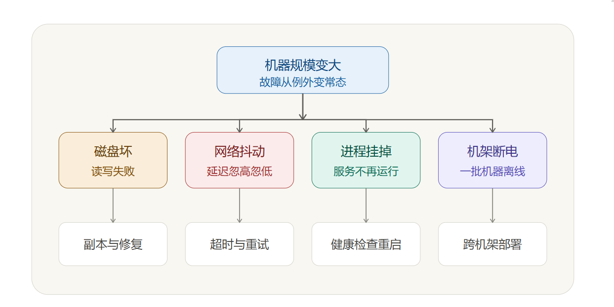

主题定位：数据的 "横向传输与隔离"（网络）+ "纵向持久化与可靠性"（存储），建议搭配
3_云网络.smm和3_云存储.smm一同学习
# 网络篇
# 寻址基础：单播 vs 任播
两种 IP 寻址方式：
- Unicast（单播） = 传统方式。一个 IP 地址只对应一台特定的服务器。比如你在国内连一个香港节点，数据就固定发往香港那一台机器，不管你身处广东还是黑龙江，走的都是同一条路，绕远了也没办法。
- Anycast（任播） = 多台位于不同地理位置的服务器共享同一个 IP 地址，网络会自动把请求路由到 "离你最近 / 最优" 的那台。
# IP 协议与网段
0.0.0.0/0和::/0是同一个意思 ——"所有 IP"，前者是 IPv4，后者是 IPv6。- 互联网有个全球约定（RFC 1918）：以下三段 IP 被专门划出来给 "私有网络 / 内网" 用，永远不会出现在公网上：
10.0.0.0/8（10.x.x.x）172.16.0.0/12（172.16.x.x~172.31.x.x）192.168.0.0/16（192.168.x.x）
# VPC 私有网络（Virtual Private Cloud）
VPC（Virtual Private Cloud，私有网络）的本质，是在公有云上创建的一个地域级、逻辑隔离的私有网络空间，用于承载子网、路由表与各类云资源。它为 CVM 等资源提供私网地址、路由控制与访问控制，是用户在云上自主可控的网络边界。需要强调的是，VPC 的本职是 "隔离" 而非 "打通"—— 单个 VPC 默认与其他网络相互隔离。
层级关系：
"地域 → VPC → 子网"

关键点：**VPC 是地域级的、可跨多个可用区，但每个子网必须绑定到某一个具体可用区。** 因此创建子网时需选择可用区 —— 由此形成 "VPC 管逻辑隔离、可用区管物理容灾" 的分工。
VPC 互联：
由于单个 VPC 逻辑隔离，跨 VPC / 跨地域的内网互通需借助专门的互联产品：
- 对等连接（Peering Connection）：适用于两个 VPC 的点对点内网互通，配置简单；
- 云联网（CCN, Cloud Connect Network）：适用于多个 VPC、跨地域乃至混合云的多点互联，是腾讯云主推的骨干互联产品（对标阿里云 CEN）。
- 全球应用加速（GAAP，Global Application Acceleration Platform）：面向公网访问加速的产品，阿里云称为 GA（全球加速），专门解决全球用户跨国、跨地域访问应用时 "又慢又不稳" 的问题。它让全球用户就近接入加速节点、再通过内部的专属高质量骨干网络把流量传回你的源站。这避免走拥堵易丢包的公网海底跨国电缆，显著降低跨国访问的延迟与丢包，用户体验接近 "就近访问本地服务"。
若需连接本地数据中心（IDC），则可使用 VPN 连接或专线接入。以东京 VPC A 与上海 VPC B 为例，建立上述互联后，双方即可直接通过内网 IP 互访，而无需暴露到公网。
VPC：云内一块块隔离的私有网络
CCN 等互联产品：云内各地域之间的私网骨干互通
GAAP：从公网用户到云的 "最后一公里" 接入加速
# 安全组
安全组就是给 CVM 服务器配的一道 "虚拟防火墙"，控制哪些网络流量能进出你的服务器。
-
它工作在实例级别 —— 直接管住每一台 CVM（也能管负载均衡、云数据库等）的进出流量，贴在 CVM 等实例边界；对比之下，云防火墙（CFW） 部署在 VPC 之间 或 云与互联网的边界。
安全组管单台实例的门禁；云防火墙管整个网络边界的安防。
-
默认拒绝，规则通过：哪些 IP、走哪个端口、用什么协议的流量允许通过；其余的，拒绝。（一个新建的、没写任何规则的安全组，会拒绝所有进出流量。）
-
它是个逻辑分组：可以把一批需求相同的服务器都加到同一个安全组里统一管理，不用一台台单独配。
-
即时生效：规则改完立刻生效，不用重启服务器，也不用等。
放通 "常用端口"：把日常远程登录（22/3389）、对外提供网站服务（80/443）、网络连通性测试（ICMP）这几件最常做的事所需要的 "门" 提前开好，省得自己一条条写规则。
# 物理网络底座：100GE 双 bonding
- 100GE：100 Gigabit Ethernet，即单口带宽高达 100Gbps 的高规格物理光纤以太网卡。
- 双 bonding：在物理宿主机（如 CDH）上，将两个 100GE 物理网卡通过 Linux 内核的 bonding 驱动聚合绑定，对外暴露成一个逻辑网络接口。
- 冗余高可用（Active-Backup / LACP）：当一条物理链路或交换机端口故障时，流量可自动切换到另一条，业务基本无感知。
- 带宽聚合：两块 100G 网卡绑定后，总吞吐理论上限翻倍到 200G。但单次传输仍只能用一块网卡 (上限 100G)，只有大量并发的传输一起跑，才能把整体吞吐推向 200G。
# 流量接入组件：CLB 与 EIP
- CLB（负载均衡器）：流量进来之后 "分流"，做健康检查（坏机器自动踢掉），自动扩容（加机器不用改入口，要配合弹性伸缩服务实现）。支持网络层（四层，基于 IP 和端口）和应用层（七层，基于 HTTP/HTTPS 等）的负载均衡。
- EIP（弹性公网 IP）：提供稳定的公网入口地址，IP 和机器解耦。
# 存储篇
# 三大存储形态
TOS 对象存储、EBS 块存储、文件存储三者定位：
-
TOS（对象存储）：通过链接 / API 分享，谁都能访问；最大优点：便宜！ 能自动把不常用的文件挪到更便宜的 "冷库"。
-
EBS（块存储）：只能给一台虚拟机用，别人访问不了；最大优点：快！稳！ 适用于操作系统、数据库。
-
文件存储：多台服务器都能同时访问；最大优点：大家一起用！ 不会出现 "你改了我看不到" 的问题。具体又可细分：
类型 特点 适合 优点 NAS（文件存储） 传统稳重，像用了多年的老牌共享盘 中小型企业文件共享、Web 服务、代码仓库 够用不贵 EFS（弹性文件存储） 灵活聪明，像新时代智能共享盘 AI 训练、自动驾驶、需弹性伸缩的场景 能伸能缩、按需付费 vePFS（并行文件存储） 性能猛兽，像专业赛车 大模型训练、HPC、影视渲染 TB/s 吞吐、千万级 IOPS
场景速记：
- 做短视频 APP → TOS + 智能分层（"不常看的视频自动存便宜区，能省 70%"）
- 搞金融系统 → EBS 极速型（"比本地 SSD 还快，9 个 9 可靠性保证"）
- 做 AI 训练 → vePFS 并行文件存储（"TB/s 吞吐量，千卡同时读不排队"）
- 传统企业 IT → EFS 文件存储（"跟您现在的共享盘一样用，还能手机访问"）
文件存储 vs 对象存储 = 文件夹操作 vs 链接分享：
-
文件操作（像在电脑里操作文件夹）：
打开文件夹 → 找到文件 → 双击打开 → 编辑 → 保存。
整个过程你知道文件在哪个文件夹、叫什么名字、多大。
-
对象操作（像在微信里发文件）：
点 "+" 号 → 选文件 → 发送 → 别人收到的是个链接。
整个过程你不知道文件存在服务器的哪个位置。
# 容灾指标：RPO 与 RTO
-
RPO（Recovery Point Objective，恢复点目标）：衡量你能容忍丢失多少数据。
- RPO = 1 小时：最多容忍丢 1 小时数据，系统每 1 小时备份一次，故障后最多恢复到 1 小时前；故障发生前这 1 小时内产生的新数据可能丢失。
- RPO = 5 分钟：每 5 分钟备份一次，最多丢 5 分钟数据。
- RPO = 0：不丢任何数据，要求实时同步，故障后能恢复到事故发生前最后一秒。
RPO 是业务需求，不是技术参数。它回答的是 "你愿意为此数据丢失承担多大风险"。
-
RTO（Recovery Time Objective，恢复时间目标）：多久恢复业务（时长），如必须在 30 分钟内恢复服务（RTO = 30 分钟）。
# 基础设施故障

分布式系统里的故障经常不是「干脆死掉」。干脆死掉反而好处理。机器不通，服务发现摘掉它；进程退出，拉起来；磁盘报错，换盘重建副本。真正难的是半死不活：偶尔慢、偶尔丢包、偶尔超时、偶尔恢复，看起来还活着，但就是把整条链路拖得很难受。
-
磁盘坏：机器上的硬盘或云盘底层介质出问题，读写失败、变慢，严重时数据丢失或数据损坏。
-
网卡抖：网络设备或链路不稳定，机器不是彻底断网，而是网络质量忽好忽坏，表现为延迟飙高、丢包、连接中断又恢复。
-
进程挂：运行中的程序出问题了，可能直接退出，也可能卡死不响应，还可能活着但不干活。
-
机架断电：一个机架里的多台服务器因为供电、PDU、交换机等问题一起掉线，这不是一台机器坏，而是一组机器同时失联。